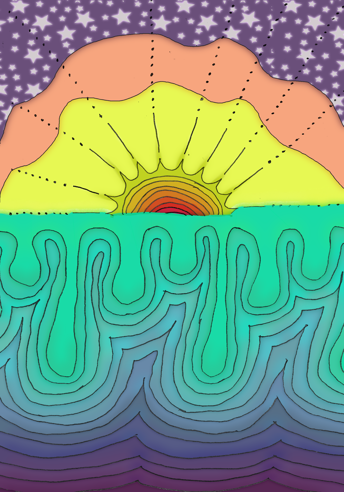

Episode 1
2026
Casey Sharp is a visual artist working in painting and mixed media. Living with neurodivergence and disability, they approach image-making as a way of exploring memory, perception, and emotional change. Their work often takes on a surreal, atmospheric quality, using drips, layering, and soft distortion to reflect internal experience and the shifting way meaning is formed and lost.
This series explores how emotional state alters perception of environment, treating landscape as a responsive reflection of internal experience. As mood shifts, boundaries between object, memory, and setting dissolve, revealing environments that behave less as fixed spaces and more as psychological translations of feeling.

2026

2026